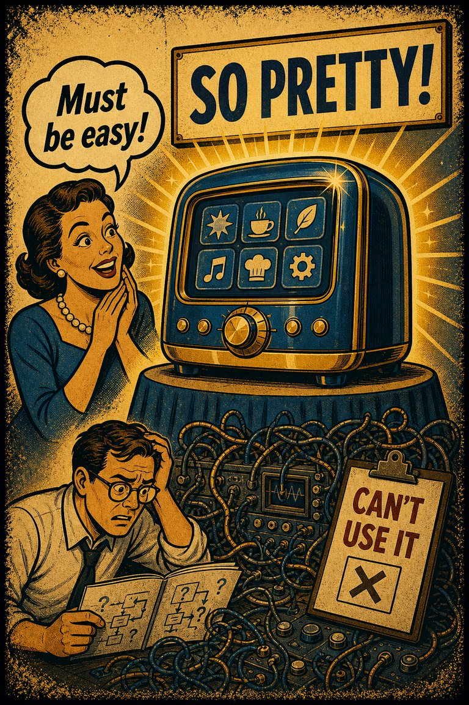
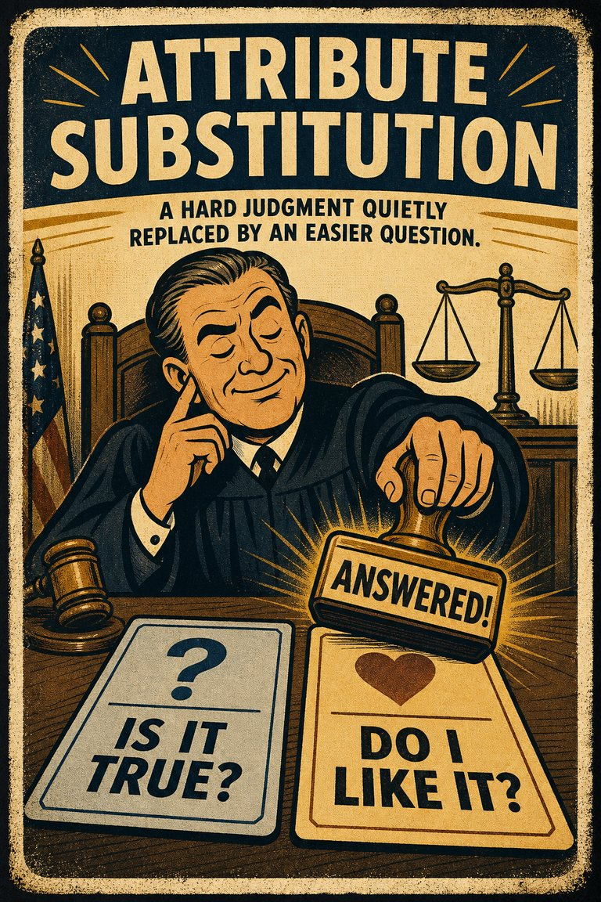
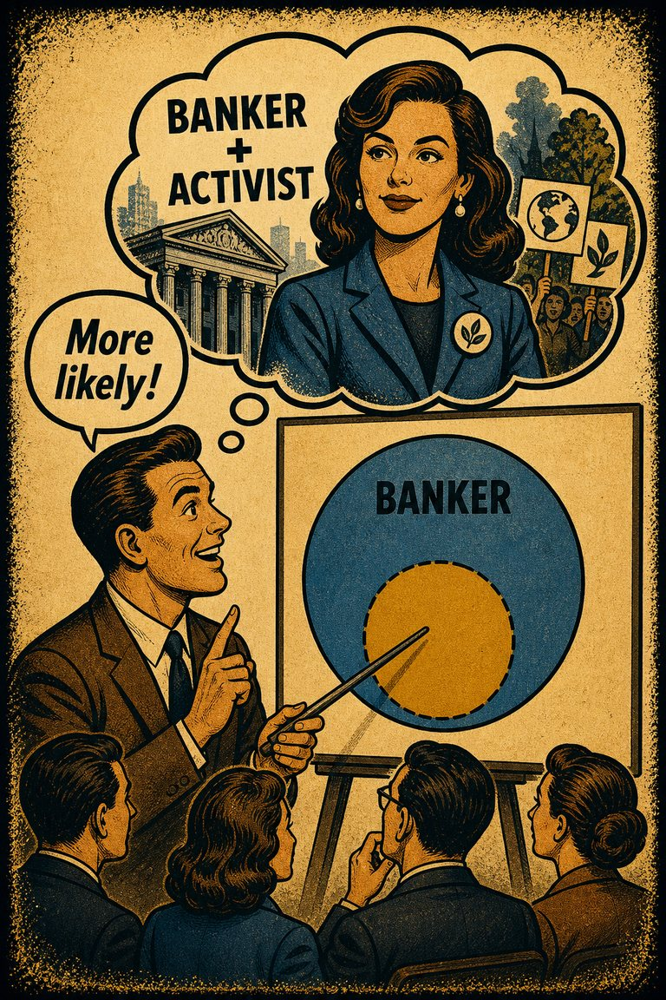
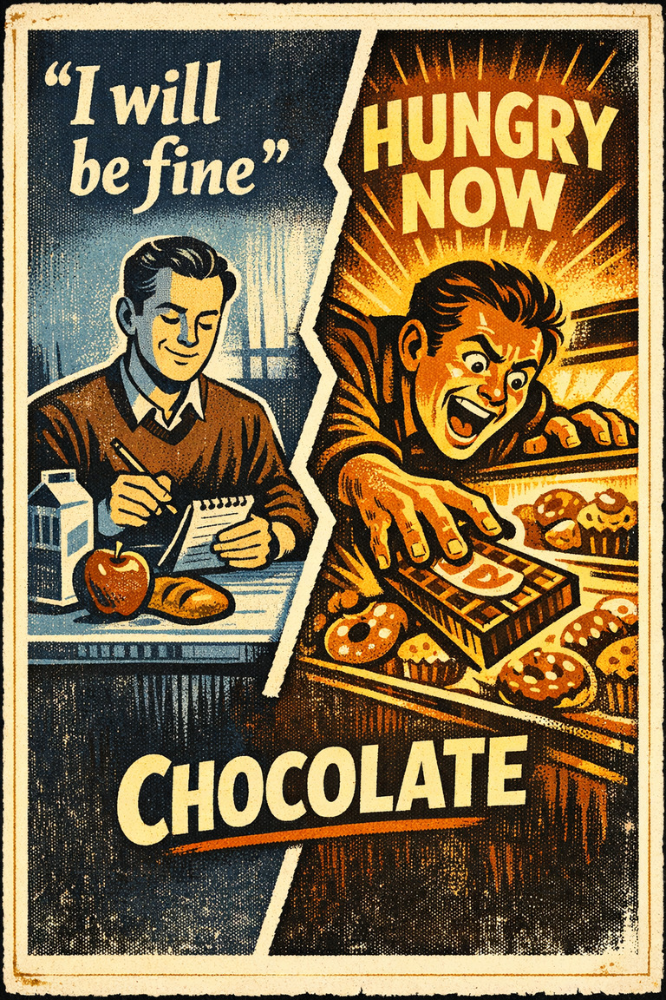
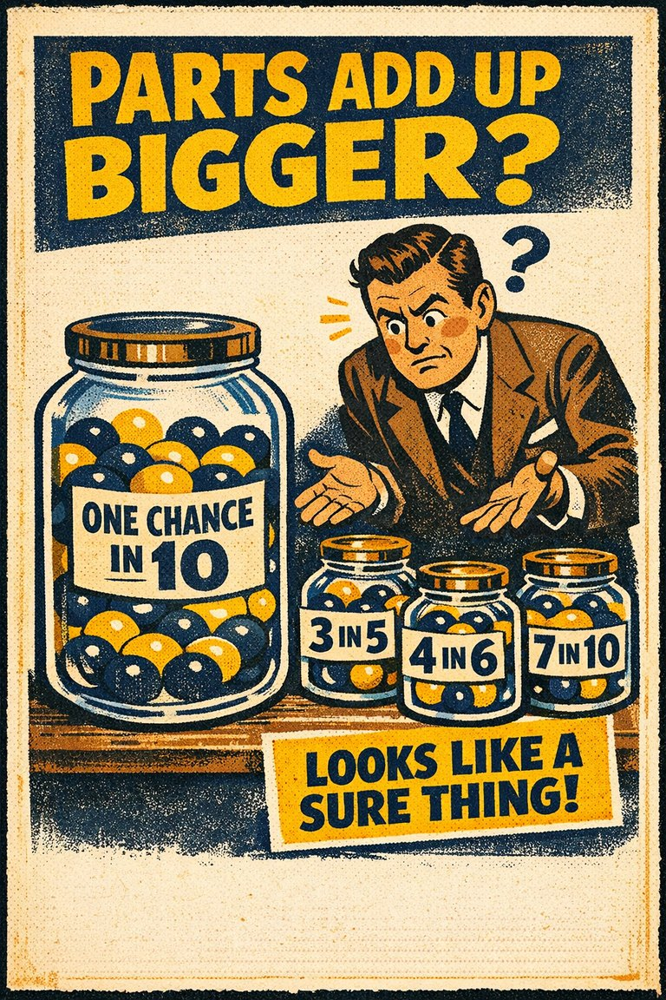

Everyday life
In everyday life, this often looks like people leaning on the easiest first interpretation when situations where estimation is already difficult and the association cue feels easier to trust than a fuller review..

Cognitive Biases
A practical cognitive-bias site with clear definitions, learning paths, assessments, self-audits, and debiasing tools.
Cognitive Bias
A tendency to underestimate the time that could be saved (or lost) when increasing (or decreasing) from a relatively low speed, and to overestimate the time that could be saved (or lost) when increasing (or decreasing) from a relatively high speed
What it distorts
Biases that distort numerical judgment, risk perception, calibration, and first-pass estimates.
Typical trigger
Situations where estimation is already difficult and the association cue feels easier to trust than a fuller review.
First countermove
Start with the estimation question instead of the first intuitive answer, then check whether the association pattern is doing invisible work.
Best use
Quick reference
What number, rate, sample, or magnitude is being misread because the mind grabbed an easier proxy?
In estimation problems, the mind overweights resemblance, vividness, proximity, or intuitive linkage before a fuller check catches up.
Use the quick check and reflection questions before locking the label. Nearby entries often share the same outer appearance while differing in what actually drives the distortion.
Each example changes the surface context while keeping the same hidden distortion in place.
In everyday life, this often looks like people leaning on the easiest first interpretation when situations where estimation is already difficult and the association cue feels easier to trust than a fuller review..
At work, this often appears when teams treat the first coherent story as sufficient instead of slowing the process long enough to compare alternatives.
In public discourse, it often surfaces when commentators move too quickly from salience to conclusion while the underlying evidence remains thinner than it sounds.
The distortion usually feels like ordinary good judgment from the inside, which is why procedural repairs matter more than mere recognition.
Teaching note: Start with the estimation problem, then show how the association pattern makes the distortion feel natural from the inside.
The strongest debiasing moves change the process, not just the label.
Start with the estimation question instead of the first intuitive answer, then check whether the association pattern is doing invisible work.
Ask someone else to restate the case from a genuinely different starting point before committing.
Change the workflow so this distortion becomes harder to repeat by default next time.
Practice And Repair
Follow the moment where the bias first becomes attractive, then track how that attraction turns into a distorted judgment before jumping straight to the label.
Situations where estimation is already difficult and the association cue feels easier to trust than a fuller review.
The first coherent reading starts to feel like ordinary good judgment from the inside.
Biases that distort numerical judgment, risk perception, calibration, and first-pass estimates.
Start with the estimation question instead of the first intuitive answer, then check whether the association pattern is doing invisible work.
What number, rate, sample, or magnitude is being misread because the mind grabbed an easier proxy?
Spot It
Slow It
Reframe It
These are nearby labels that can share the same outer appearance while differing in what actually drives the distortion. Use the overlap, the distinction, and the diagnostic question together before settling the call.
Why compare it: A nearby label worth comparing before settling the diagnosis.
Why compare it: A nearby label worth comparing before settling the diagnosis.
Why compare it: A nearby label worth comparing before settling the diagnosis.
These are useful when the label seems roughly right but the process change still feels underspecified.
What number, rate, sample, or magnitude is being misread because the mind grabbed an easier proxy?
What feels connected here mainly because it is salient, familiar, or easy to pair mentally?
What evidence or comparison would most seriously change the current call?
These sourced cases come from closely related biases and help show the same kind of pressure while a direct case for this page catches up.
Affect heuristic in technology and environmental risk
People frequently answer 'How risky is it?' by first answering 'How bad does this feel?' which lets a global like-or-dislike impression stand in for specific tradeoff analysis.
Why it fits: An easier emotional question silently substitutes for the harder one that was actually asked.
Related through: Attribute substitution
Modern judgment research
Detailed suspect profiles outrank broader categories
In case-style reasoning, richly detailed descriptions can make a narrow conjunction feel more probable than the simpler broader category that contains it.
Why it fits: Coherence and narrative fit are doing the work that probability should be doing.
Related through: Conjunction fallacy
Modern probability research
These linked tools turn the page into practice instead of leaving it at the level of definition.
This bias does not yet have a dedicated path, but these nearby paths are usually the clearest place to see the same family of distortion in motion.
Nearby path
Comparison Traps And Choice Architecture
Use this path when you suspect the choice set itself is manufacturing preference rather than merely revealing it.
Nearby path
Use this path when you want the minimum set of pages that gives the rest of the site immediate traction.
This bias does not yet have its own dedicated self-check, but these nearby audits usually catch the same kind of drift before it hardens.
Nearby audit
Before You Let The Menu Decide
Am I choosing the best option, or the option the current frame is making easiest to endorse?
Nearby audit
What did the surprise reveal about the world, and what did it reveal about my forecasting habits?
This bias is not yet the named center of its own kit, but it already appears in nearby workshop material that teaches the same pressure in context.
Nearby workshop
A 45-minute lesson for separating vivid stories, repeated claims, and missing denominators before a news item becomes belief.
There is no dedicated scenario for this bias yet, but these nearby cases test the same kind of pressure and repair move.
Nearby scenario
Risk gets replaced by fear
A team discussing cyber risk keeps answering how dangerous a scenario feels instead of how probable it actually is, and the emotional force of the scenario quietly becomes the ver…
Nearby scenario
The clip that became the crime rate
After several vivid subway-crime clips circulate, a group chat starts talking as if the entire transit system has become much more dangerous, although no one has checked trend dat…
These neighbors were selected from shared categories, shared patterns, and explicit editorial links where available.

The tendency to treat attractive things as more usable than they really are.

The tendency to answer a hard judgment question by unconsciously substituting an easier one.

The tendency to judge frequency, risk, or importance by how easily examples come to mind.

The tendency to assume that specific conditions are more probable than a more general version of those same conditions.

The tendency to underestimate the influence of visceral drives on one's attitudes, preferences, and behaviors.

The tendency to estimate that the likelihood of a remembered event is less than the sum of its mutually exclusive components.